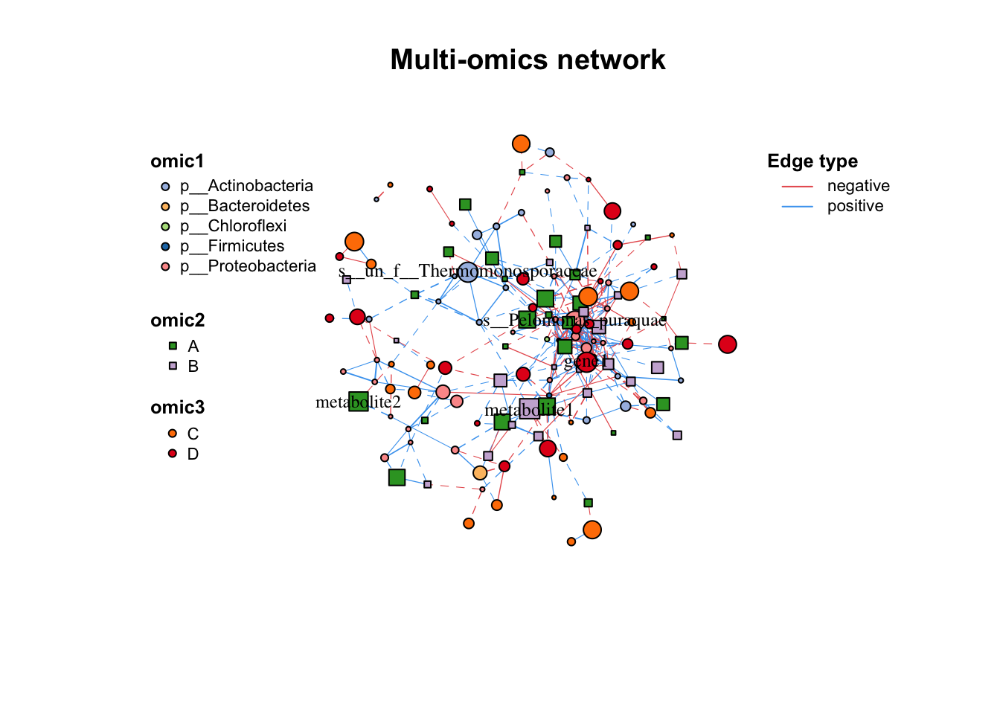
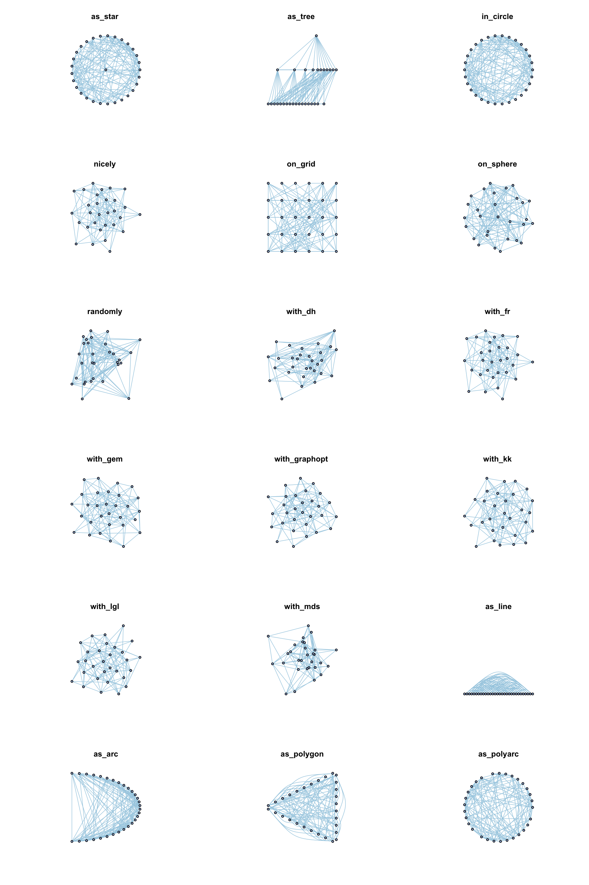
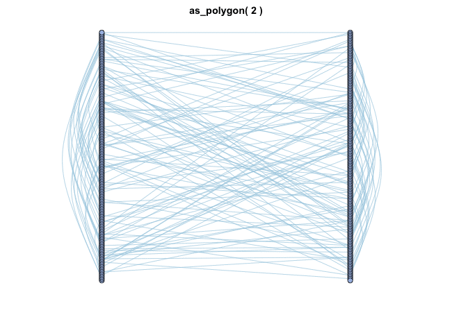
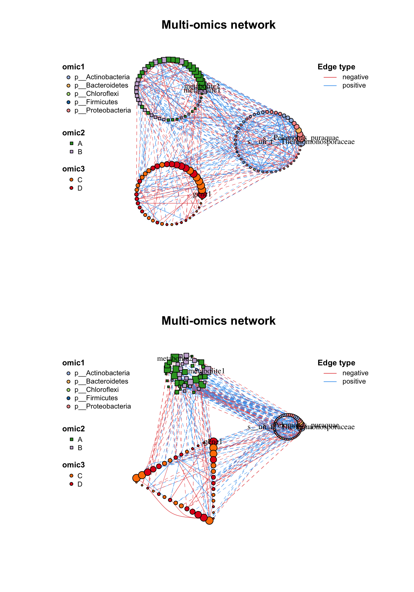
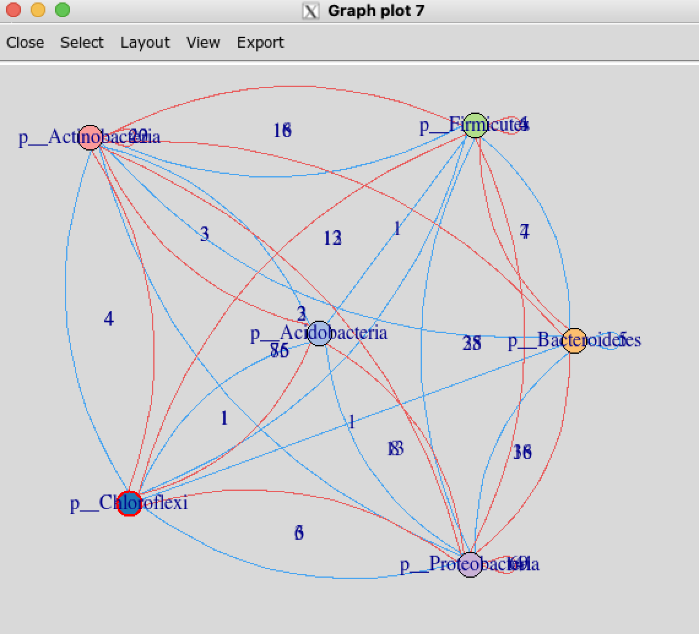
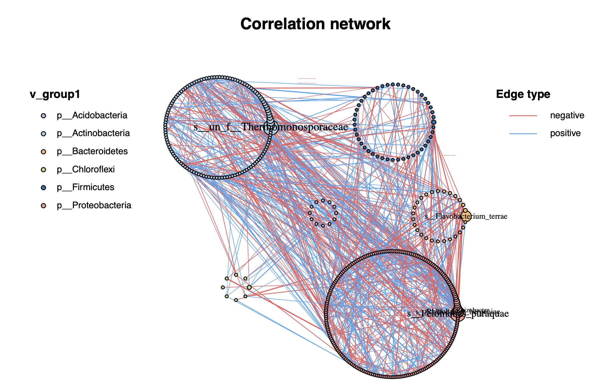
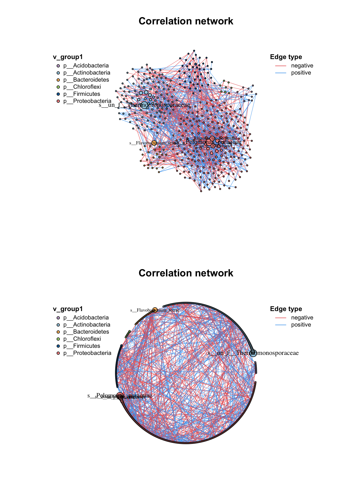
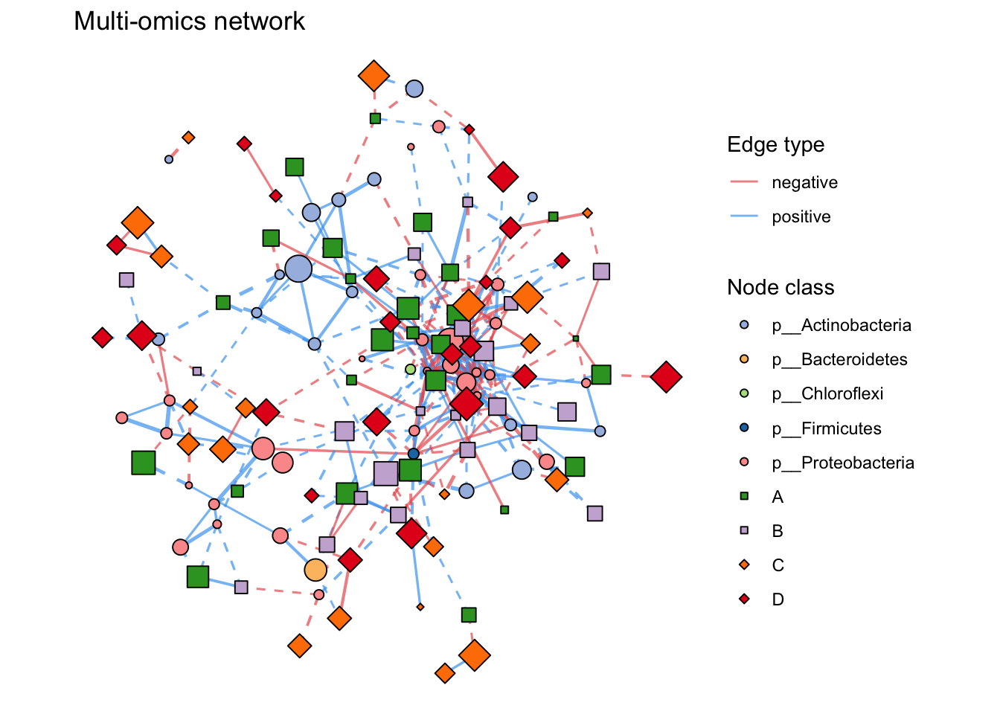

Chapter 5 Visualization
MetaNet supports basic R plot and provides some interfaces for other software (Gephi, Cytoscape, ggplot, networkD3) to do visualization, while there are also a lot of layout methods for better display.
5.1 Basic plot
5.1.1 Set attributes
As we mentioned earlier, there are some internal attributes have been set when building network, which are related to the network visualization (Table ??). So you can use c_net_set() to custom these attributes fitting to your research needs. Give the network various annotate tables and determine which columns use to set, you can give the columns name (one or more) to vertex_group, vertex_class, vertex_size, edge_type, edge_class, edge_width. Colors, linetypes, shapes and legends will be assigned automatically, just use plot() to get the basic metanet figure.
data("multi_test",package = "MetaNet")
data("c_net",package = "MetaNet")
#build a multi-network
multi_net_build(micro,metab,transc)->multi1
#v_group is default, three different table
#set vertex_class
multi1=c_net_set(multi1,micro_g,metab_g,transc_g,vertex_class = c("Phylum","kingdom","type"))
#set vertex_size
multi1=c_net_set(multi1,
data.frame("Abundance1"=colSums(micro)),
data.frame("Abundance2"=colSums(metab)),
data.frame("Abundance3"=colSums(transc)),vertex_size =paste0("Abundance",1:3))
plot(multi1)
Figure 5.1: Basic plot function
5.1.2 Plot setting
If you want to custom the network plot flexibility, use the c_net_plot() which contains igraph arguments and some other arguments. The arguments of c_net_plot() show in the Table @ref(), some are different to the igraph original definition.
| Arguments | Description |
|---|---|
| coors | cooridnates dataframe |
| vertex.color | color of nodes, receive vector (1. length same to number of nodes; 2. length same to numbers of v_class; 3. named verctor like c(A=“red”,B=“blue”)) |
| vertex. shape | shape of nodes, receive vector (1. length same to number of nodes; 2. length same to numbers of v_group; 3. named verctor like c(v_group1=“circle”,B=“square”))shape list: none, circle, square, csquare, rectangle, crectangle, vrectangle, pie, raster, or sphere |
| vertex.size | size of nodes, receive numerical vector (length same to number of nodes)please use mmscale to control vertex.size, don’t be too large. |
| labels_num | show how many labels,>1 indicates number, <1 indicates fraction ,default: 5, according to the vertex.size |
| vertex.label | the label of nodes, NA indicates no label |
| vertex.label.family | label font family |
| vertex.label.font | label font, 1 plain, 2 bold, 3 italic, 4 bold italic, 5 symbol |
| vertex.label.cex | label size |
| vertex.label.dist | distance from label to nodes |
| vertex.label.degree | 0:right, pi: left, pi/2:below, -pi/2:above |
| vertex.frame.color | color of nodes frame |
| plot_module | use module as the v_class |
| mark_groups | logical, mark the modules? |
| mark_color | color of mark.groups |
| edge.color | color of edges, receive vector (1. length same to number of edges; 2. length same to numbers of e_type; 3. named verctor like c(A=“red”,B=“blue”)) |
| edge.width | width of edge, receive numerical vector (length same to number of edges)please use mmscale to control vertex.size, don’t be too large. |
| edge.lty | linetype of edge, receive vector (1. length same to number of edges; 2. length same to numbers of e_class; 3. named verctor like c(A=“red”,B=“blue”)) |
| edge.arrow.size | arrow size for directed network |
| edge.arrow.width | arrow width for directed network |
| arrow.mode | arrow mode, 0 no arrow, 1 back, 2 forward, 3 both |
| edge.label | the label of edges, NA indicates no label |
| edge.label.family | label font family |
| edge.label. font | label font, 1 plain, 2 bold, 3 italic, 4 bold italic, 5 symbol |
| edge.label.cex | label size |
| edge.label.x | label x-axis |
| edge.label.y | label y-axis |
| edge.label.color | label color |
| edge.curved | The curvature of the body, on a scale of 0-1, FALSE means 0, TRUE means 0.5 |
| legend | show any legend? FALSE means close all legends |
| legend_cex | character expansion factor relative to current par(‘cex’), default: 1 |
| legend_position | legend_position, default: c(left_leg_x=-1.9,left_leg_y=1,right_leg_x=1.2,right_leg_y=1) |
| legend_number | add numbers in legend? (v_class number, e_type number…) |
| lty_legend, lty_legend_title | show lty_legend? and the title |
| size_legend, size_legend_tiltle | show size_legend? and the title |
| edge_legend, edge_legend_title, edge_legend_order | show edge_legend? and the title, the order of legend receives a vector |
| width_legend, width_legend_title | show width_legend? and the title |
| col_legend, col_legend_order | show col_legend? and the title, the order of legend receives a vector |
| group_legend_title, group_legend_order | the title of group, the order of legend receives a vector |
| margin | margin, a vector whose length =4 |
| rescale | scale the coors to [-1,1], default T |
| asp | y/x ratio |
| frame | if T, add frame |
| main | the main title of graph |
| sub | subtitle |
| xlab | x-axis label |
| ylab | y-axis label |
5.2 Layout
Layout is an important part of network visualization, a good layout will present information clearly. So, in MetaNet, we always use a dataframe to store the coordinates of a layout. coors is a three-columns dataframe contains name, X, Y.
5.2.1 Basic layout
Use c_net_lay() to get coordinates with specific layout methods. The method can be one of as_line(), as_arc(), as_polygon(), as_polyarc(), or other graph layouts in igraph like as_star(), as_tree(), in_circle(), nicely(), on_grid(), on_sphere(), randomly(), with_dh(), with_fr(), with_gem(), with_graphopt(), with_kk(), with_lgl(), with_mds().

Figure 5.2: Layout methods for c_net_lay()
And for each method, you can add some arguments in it:
#get a metanet
go=erdos.renyi.game(30,0.25)
go=c_net_update(go)
plot(go,coors=with_fr())
plot(go,coors=with_fr(niter = 99,grid = "nogrid"))The as_polygon() is interesting:

Figure 5.3: Layout of as_polygon() in c_net_lay
5.2.2 Group layout
Beside the c_net_lay(), we provide an advanced layout method for a network with group variable: g_lay(). It is easy to use g_lay() to control each group position and layout of each group.
- First, assign a group variable.
- Give a layout1 for group position, one of
1.a dataframe or matrix: rowname is group, two columns are X and Y
2.function: layout method for
c_net_lay()default: in_circle() - Adjust the zoom1 of layout1.
- Give a layout2 (layout method for
c_net_lay()) for each group layout, or use a list contains functions match each group. - Adjust the zoom2 of layout2. you can use a vector to adjust each group zoom.
- use show_big_lay = T to look the layout1 distribution.
par(mfrow=c(2,1))
#set circle layout
g_lay(multi1,group ="v_group",layout1 =in_circle(), zoom1=10,layout2 =in_circle(),zoom2 = 5)->g_coors
plot(multi1,coors=g_coors)
#set different layout for each group
g_lay(multi1,group ="v_group",layout1 =in_circle(), zoom1=10,layout2 =list(in_circle(),with_fr(),as_polygon()),zoom2 = 2:4)->g_coors
plot(multi1,coors=g_coors)
Figure 5.4: Simple usage of g_lay()
As layout1 also receive a matrix or dataframe, so we can use the group skeleton of network to adjust the layout.
g_lay(co_net,group ="v_class",layout1 =in_circle(), zoom1=10,
layout2 =in_circle(),zoom2 = c(1,5,2,1,3,7))->g_coors
plot(co_net,coors=g_coors)
#firstly get the skeleton plot
get_group_skeleton(co_net,"v_class")->s_net
V(s_net)$size=10;E(s_net)$width=1
#then use tkplot to do manual adjustment.
x <- igraph::tkplot(s_net)
#Here: Move nodes within the tkplot window to a layout you like!
da <- igraph::tkplot.getcoords(x)
#close the window
igraph::tkplot.close(x)
#pass the da to layout1
g_lay(co_net,group ="v_class",layout1 =da, zoom1=20,
layout2 =in_circle(),zoom2 = c(1,4,2,1,3,5))->g_coors
plot(co_net,coors=g_coors)
Figure 5.5: Use tkplot to adjust big layout.

Figure 5.6: Use tkplot to adjust big layout.
By the way, g_lay_nice(), g_lay_polyarc(), g_lay_polygon() are also good group layout method.
par(mfrow=c(2,1))
g_lay_nice(co_net,group = "v_class")->g_coors
plot(co_net,coors=g_coors)
g_lay_polyarc(co_net,group = "v_class",group2_order = "size")->g_coors
plot(co_net,coors=g_coors)
Figure 5.7: Usage of g_lay_nice() and g_lay_polyarc()
5.3 Other styles
5.3.1 ggplot
If you are more familiar with ggplot2, use the function to.ggig() transfer the basic R plot to ggplot2 style, so that you can use some convient function like labs(), theme(), ggsave(), cowplot::plot_grid() to make better figure.
to.ggig(multi1,coors=c_net_lay(multi1))->ggig
plot(ggig)
Figure 5.8: Plot a network in ggplot2 style
5.3.2 Gephi
If you are dealing with some big dataset, We recommend to use Gephi making layout. We provide a interface to Gephi by graphml format file, you can use the algorithm then export a graphml file.
c_net_save(co_net,"test","graphml")
input_gephi("test2.graphml")->gephi
c_net_plot(gephi$go,gephi$coors)